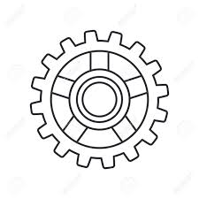

L'auto Esperia
L'Esperia non fu solo un’automobile, ma un simbolo dell’ambizione industriale italiana agli inizi del Novecento. Fondata nel 1905 a Bergamo, la Società Automobili Lombarda (S.A.L.) cercò di affermarsi nel settore automobilistico con un marchio che puntava su qualità, affidabilità e innovazione. Nonostante il mercato fosse dominato da case straniere più esperte e le sfide economiche e tecniche fossero significative, la S.A.L. investì in ricerca e sviluppo, cercando di anticipare il futuro sviluppo del settore automobilistico italiano. Sebbene l'auto Esperia non divenne un grande successo commerciale, rappresentò comunque un tentativo di affermare il progresso industriale italiano e ha un posto di rilievo nella storia automobilistica del Paese. Anche se la produzione della S.A.L. si interruppe oltre un secolo fa, il nome "Esperia" ha acquisito un significato più ampio, diventando simbolo di progresso, innovazione e connessione tra tradizione e modernità. L'eredità di questa automobile si è trasformata in un patrimonio vivo, continuando a ispirare nuove generazioni e alimentare lo sviluppo tecnologico. Oggi, il nome "Esperia" non è solo un ricordo del passato, ma un esempio di come l'eccellenza tecnica possa plasmare il futuro, promuovendo la formazione, la ricerca e l'innovazione.

Componenti auto Esperia
La trasmissione dell’auto è uno degli aspetti meccanici più fondamentali che permette al veicolo di muoversi in avanti e indietro.Coinvolgendo diversi organi che hanno lo scopo di trasferire la potenza generata dal motore alle ruote motrici. Questo sistema è ciò che permette al veicolo di mettersi in movimento e di adattarsi a diverse situazioni stradali. In questo tipo di sistema, il guidatore è responsabile di selezionare manualmente le marce attraverso il cambio, che regola il rapporto di trasmissione tra il motore e le ruote.

-
Elementi automobile
Scopri tutti gli elementi essenziali della carrozzeria e dell'estetica dell'auto Esperia.
-

Elementi trasmissione
Esplora i dettagli del motore che ha alimentato la potenza della Esperia.
Citazioni sull'auto Esperia
"L'auto Esperia ha segnato una rivoluzione nel design automobilistico italiano del XX secolo."
- Giuseppe Ferrari, Storico dell'auto
"Nonostante le difficoltà, la S.A.L. ha lasciato un segno profondo nel cuore degli appassionati di motori."
- Maria Rossi, Esperta di veicoli storici